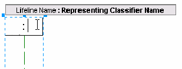

Adding a Classifier
You can populate diagrams with Classifiers.
To add a classifier:
- In the Modeling Palette for Collaboration diagrams, select the Lifeline icon
 .
.
- Click anywhere in the Diagram editor.
A Lifeline is added to the diagram.
- Double-click the right side of the lifeline to enter a new or existing classifier.

- If the Classifier you specify for this element is not found, the IDE prompts you to add Classifier.
Legal Notices